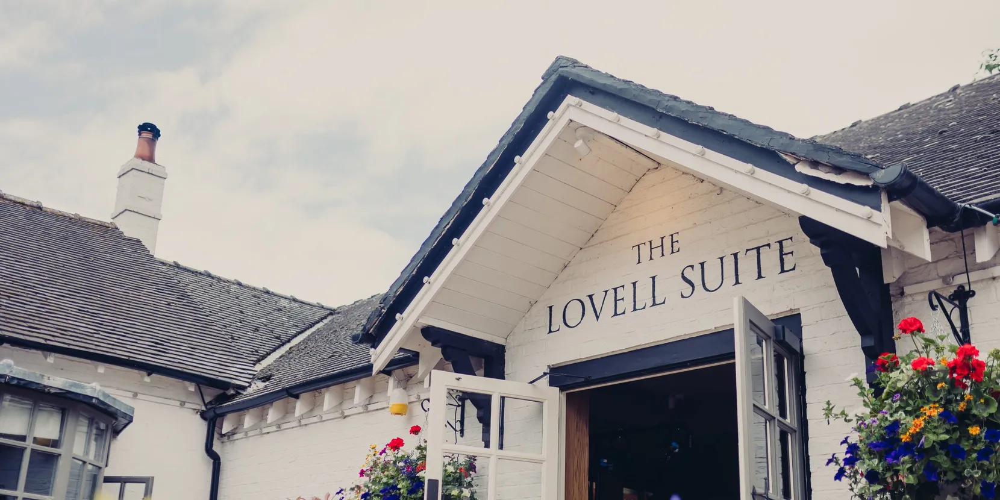

20th February 2027
Ceremony at 14:30
Music and drinks end at 00:00
Joyfully invite you to celebrate
their wedding
We can’t wait to gather our favourite people for a relaxed day of good food, drinks and a really lovely time together.
Ceremony at 14:30
Music and drinks end at 00:00
The Swettenham Arms
Swettenham Lane, Congleton
Cheshire, CW12 2LF
Come dressed up, but choose something comfortable!

An intimate venue in the heart of the Cheshire countryside.
The Swettenham Arms
Swettenham Lane, Congleton
Cheshire, CW12 2LF
6 miles from Junction 18 of the M6
There is free parking at the venue.
Open in Google Maps ↗Please respond using our RSVP form by 15th November 2026. If you could respond as soon as you’re able to, this would be a huge help!
Tell us whether you can attend, who’ll be joining you, and any dietary requirements.
Complete the RSVP form ↗The form opens securely in a new tab.As soon as convenient! We have to finalise everything a couple of months out, so we would appreciate knowing numbers as soon as possible. The RSVP deadline is 15 November 2026.
Although there’s no accommodation on-site, there are several options nearby:
There are various options around Congleton, Macclesfield, and Northwich too.
There are none planned at the moment. As the location is not easily accessed by public transport, and the venue is reached via country roads that may become icy, feel free to let us know in the RSVP or pop us a message if you might need any assistance getting to the venue. We’re considering arranging a minibus from Cranage De Vere if there is enough interest, so please let us know via the RSVP form if this would be useful.
Nearby train stations where you could get a taxi from include Holmes Chapel and Goostrey, on the Crewe–Manchester line, or further afield there is Congleton.
We highly recommend pre-booking taxis. The venue recommends Silver Town Taxis ↗. There’s plenty of parking available right outside the pub.
This will be a close-knit celebration, and we’re trying to stick to the guest numbers in the wedding package, so we aren’t able to offer plus ones at the moment. If anything changes, we’ll let you know as soon as we can!
We’ve chosen to invite only Alice’s nephews, as they’re playing a special role in the wedding.
We will have a three-course wedding breakfast after the ceremony.
There will also be light bites available in the evening. And, of course, cake!
If you have any dietary restrictions, allergies or significant food aversions, please let us know and the venue will do its best to accommodate them where it can.
We’re easy on gifts, and we’re just happy that you’re able to attend and celebrate with us!
If you’re still keen to give us something, a nod to our hobbies and interests or something for our new home and garden would be very much appreciated, but it isn’t required.
Harry and Alice are happy to help with anything! Our dedicated email address is harryandslice@gmail.com.
For any questions you might not want to ask us directly, please feel free to get in touch with our parents (Sue & Richard, Kay & David).